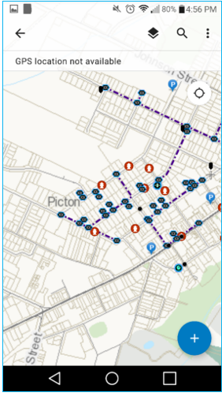

Collecting with Collector - Project ID#2014


Below is a video that details this solution's Collector interface. Collector is a quick and easy way to collect data in the field, and import that data to ArcGIS online or other Esri platforms. It is avaliable for Android, Windows Phone, and iOS devices, including tablet devices, and has an offline mode to allow data to be uploaded asynchronously. It allows for creation and modification of most feature classes, including point, line, and polygon features, and any attributes of those feature classes. Allowed attribute values can be restricted through the use of domains, ensuring more reliable and robust data collection.

Collect data anywhere, anytime.
Available for